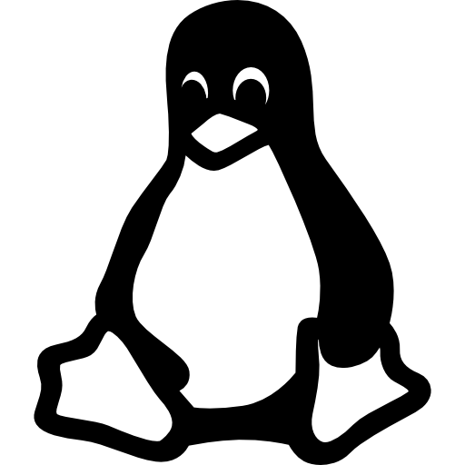

Lenguajes, Tecnologias y Herramientas


Tecnologias y Herramientas


En Aprendisaje


- 
Mis Proyectos
Mi Portafolio Web
Este proyecto consiste en una pagina web que seguardara en github con el fin de tener un
portafolio de trabajo a donde subir mis proyectos y informar sobre las avilidades y
tecnologias que domino.
A un que la verdad mas que nada solo sirve como una practica
y una forma de eperder el miedo asia el mundo web.
A un que al hacer este proyecto
me he dado cuenta que de lo poco que se y que realemnte no domino tantas tecnologias y/o
legunajes como yo pensaba, eso me abrio los ojos a lo poco que se.
Ablando mas propiamente dle proyecto; es una pagina web secilla con solo html, css y js
siendo el 90% del estilo visual fue echo en css y js solo fue utilizado para un scroll mas suave
tanbien agrege link´s a mis redes cociales: GitHub y Instagram, así como Gmail y mi numero de
telefono todos estos contactos se encuentran en la seccion de contactos.
La mentable mente de momento solo cuento con un proyecto real el cual seria este mismo
portafolio, a un actualmente me encuentro estudiando html, css, js y react para en un futuro
tanbien poder hacer aplicaciones web y tener algun empledo.
Me gutaria meterle mas contenido, animaciones, particulas y sistemas interactivos con el
usuario, pero mis avilidades no dan para tanto asi que deber simplemnte limitarme de momentos
a un que en un futuro cuendo tenga uno o dos proyectos mas listos para ser agragados a mi
portafolio, ese sera el momentos en el que actulice esta pagina web para que funciones como se
debe.
Comentario del autor:
Espero poder actulizar esta pagian con nuevos proyectos y esperiencias quizas con un mejor
sistemas para visualizar los proyectos, un cacha para verficar que solo humanos entren y un
sistema anti hacker.